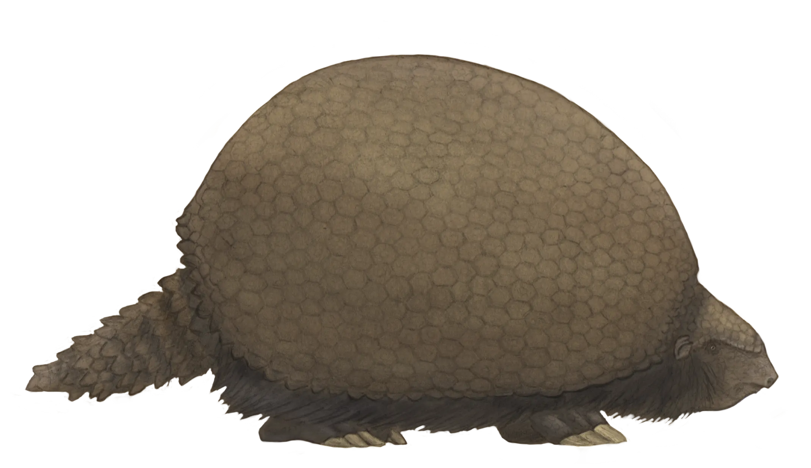

Museo De Paleontología SEMAHN
-
Inicio
-
Otras publicaciones
Cingulados
De la prehistoria a nosotros: los cingulados que dejaron su huella en Chiapas
Museo de Paleontología SEMAHN
Inicio
Otras publicaciones
Museo De Paleontología SEMAHN
Inicio
Otras publicaciones
De la prehistoria a nosotros: los cingulados que dejaron su huella en Chiapas
Los cingulados son un grupo de mamíferos xenartros que están agrupados en el orden Cingulata. Este orden está caracterizado por la presencia de osteodermos articulados que conforman una coraza dorsal y están representados por los armadillos (con representantes actuales) y gliptodontes (extintos). A su vez, se encuentran separados en las superfamilias Dasypodoidea (familias Peltephilidae y Dasypodidae) y Glyptodontoidea (familias Pampatheriidae, Palaeopeltidae y Glyptodontidae).
Los cingulados, junto a sus hermanos los perezosos, tuvieron su origen en Sudamérica durante el Paleoceno y llegaron a Norteamérica mediante el Gran Intercambio Biótico Americano (GABI) el cual ocurrió hace 3 millones de años tras formarse el Istmo de Panamá, permitiendo el paso de especies entre Norte y Sudamérica. Cingulados como gliptodontes migraron al norte, mientras carnívoros y ungulados llegaron al sur. Este evento transformó profundamente los ecosistemas americanos.

En la actualidad, Cabassous centralis y Dasypus novemcinctus son los únicos representantes vivos de los cingulados en Chiapas. Mientras que su registro fósil de este grupo se remonta al Pleistoceno tardío en los municipios de Villa Corzo y Villaflores, aproximadamente hace 11,000 años y está representado por Glyptotherium cylindricum y Dasypus bellus. Los cingulados de Chiapas están asociados con restos de Bison sp., Mammuthus hiodon y Equus conversidens, permitiendo asignarle una edad biocrónica rancholabreana.
Entre los cingulados, la familia Glyptodontidae más abundante en el registro fósil de Chiapas con presencia en las localidades fosilíferas de Gliptodonte, Los Mangos y La Simpatía en los municipios de Villa Corzo y Villaflores.
El género Glyptotherium está caracterizado por una armadura rígida y cuerpo robusto, presenta osteodermos hexagonales que formaban un caparazón completo, cubriendo también el cráneo y la cola. En Chiapas, se han recuperado un número rico en elementos óseos que incluyen; cráneo, mandíbula, osteodermos, elementos de extremidades anteriores y posteriores, cintura pélvica y vertebras caudales.
Dada las características morfológicas, principalmente de los osteodermos, las ejemplares fueron inicialmente asignados como Glyptotherium floridanum, puesto que era la especie con mayor distribución en Norteamérica. Por su parte, G. cylindricum aunque presentaba similitudes morfológicas y temporalidad con su especie hermana G. floridanum, eran diferenciadas arbitrariamente por su distribución. Mientras que G. floridanum era restringida para Norteamérica, G. cylindricum estaba para el territorio de Sudamérica. Fue mediante una revisión morfológica que se reasigno taxonómicamente a Glyptotherium cylindricum como la especie valida al ser la primera descrita, por lo tanto G. floridanum es considerada un sinónimo. En consecuencia, G. cylindricum es una especie con ampliamente distribuida en el Continente Americano, habitando pastizales abiertos con afluentes de agua.

Dasypus bellus es una especie extinta de armadillo de la familia Dasypodidae que existió en Norte y Suramérica durante el Plioceno y Pleistoceno. La especie vivió desde hace 1,8 millones de años hasta hace 11,000 años. Era ligeramente más grande que la especie relacionada, el armadillo de nueve bandas (Dasypus novemcinctus). Sus fósiles se han hallado desde Bolivia, Argentina y Brasil hasta los estados estadounidenses de Florida, Nuevo México, Iowa e Indiana.
Carbot-Chanona, G. y Gómez-Pérez, L.E. (2023). First record of the collared peccary Dicotyles tajacu (Artiodactyla, Tayassuidae), in the Gliptodonte locality, Villaflores municipality, Chiapas. Paleontología Mexicana, 12(2): 53-62.